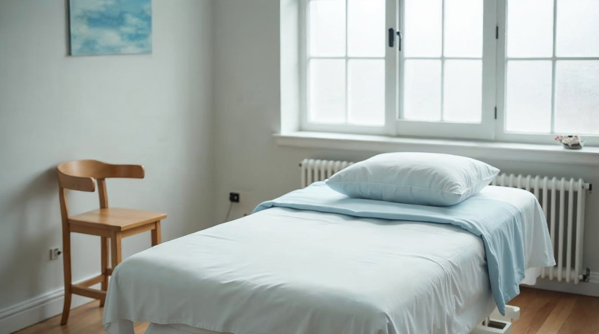
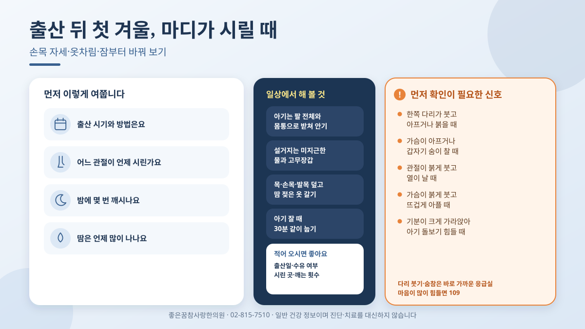

이종호 한의사 감수좋은꿈참사랑한의원 대표원장 (한의사 면허번호 19769)발행 2026-11-26 · 수정 2026-11-27
이 글의 차례
새벽 3시, 아기 울음소리에 몸을 일으켜요. 거실 바닥에 발을 딛는 순간 발목으로 찬 기운이 스며들고, 아기를 안아 올리는데 엄지 쪽 손목이 시큰합니다. 수유 쿠션에 아기를 눕히고 나서야 무릎 속까지 시린 게 느껴지죠. 양말을 두 켤레나 신었는데도요.
봄에 아기를 낳고 그동안은 정신없이 지나왔는데, 찬바람이 불기 시작하니 몸 마디마디가 먼저 계절을 알아챕니다.
진료실에서 이런 말씀을 자주 들어요. "병원에서는 검사해 보니 괜찮다는데, 뼈마디로 바람이 숭숭 드는 것 같아요." "어른들은 산후조리를 잘못해서 그렇다고 하시는데, 그 말을 들으면 더 속상해요." 아기를 돌보느라 내 몸은 늘 뒷전이었는데, 아픈 이유까지 내 탓처럼 들리니 얼마나 서운하셨을까요. 그동안 정말 애쓰셨어요.
먼저 이 말씀부터 드릴게요. 조리를 잘못하셔서가 아니에요. 덜 회복된 몸으로 밤마다 깨고, 하루에도 수십 번 아기를 안아 올리는데 겨울까지 왔으니, 마디가 먼저 신호를 보내는 건 어찌 보면 자연스러운 일이거든요.
한의학에서는 출산 뒤에 관절이 시리고 아프며, 바람이 드는 느낌과 땀, 오한이 이어지는 것을 산후풍이라고 불러 왔어요. 그러니까 사실은 두 가지를 나눠서 봐야 해요. '검사에서 이상이 없다'는 것과 '불편이 없다'는 건 다른 얘기예요. 검사에서 뚜렷한 이상이 나오지 않는 경우가 많지만, 그렇다고 기분 탓은 아니거든요.
쪼개진 잠과 되풀이되는 육아 동작, 땀과 찬 공기가 겹치면서 몸이 보내는 신호로 보고 진지하게 살핍니다.
우선 손목을 덜 꺾는 자세와 목·손목·발목을 덮는 옷차림, 조각난 잠을 모으는 방법부터 바꿔 보세요. 그리고 비슷한 증상을 만드는 다른 원인은 없는지도 함께 확인해 보시길 권해요.
왜 출산 뒤 첫 겨울에 마디마디가 시릴까요
임신 기간에는 아기가 나올 길을 넓히기 위해 몸에서 나오는 호르몬의 영향으로 관절을 붙잡아 주는 인대가 느슨해집니다. 출산을 하고 나서도 이 상태가 한동안 이어질 수 있다고 알려져 있습니다. 관절을 받쳐 주는 힘이 덜한 상태에서 아기를 안고, 들어 올리고, 젖을 먹이고, 기저귀를 갈고, 목욕시키는 동작이 하루에도 수십 번 되풀이됩니다.
특히 엄지를 벌린 채 아기의 겨드랑이를 받쳐 드는 동작은 손목 엄지 쪽 힘줄에 부담을 주기 쉽고, 손목을 꺾은 채 오래 버티면 손목 안쪽 신경이 눌려 손가락이 저리기도 합니다.
출산 때의 출혈과 체력 소모를 다 채우기도 전에 밤 수유가 시작되니, 회복할 시간이 늘 모자랍니다. 잠이 쪼개지면 몸이 데워지고 풀리는 시간도 짧아집니다. 게다가 출산 뒤 몇 주 동안은 몸에 남은 물기가 빠져나가며 땀이 많이 나고, 수유하는 동안에도 땀을 자주 흘립니다. 땀에 젖은 채 찬 공기를 맞으면 땀이 식으면서 몸이 금세 차가워지지요.
한의학에서는 출산 뒤에 기혈이 크게 허해지고 땀구멍이 열려 있어, 바람과 찬 기운, 습한 기운이 몸 안으로 스며들기 쉽다고 보았습니다. 그래서 예로부터 산후에는 찬바람과 찬물을 조심하라고 했던 것입니다. 다만 이 말을 한여름에도 꽁꽁 싸매고 땀을 흘려야 한다는 뜻으로 받아들일 필요는 없습니다. 지나치게 땀을 흘리는 것도 몸에는 부담이 됩니다.
비슷한 증상을 만드는 다른 원인도 있습니다. 출산 뒤 1년 안에 갑상선 기능이 오르내리면서 추위를 많이 타고 몹시 피곤하거나, 반대로 가슴이 두근거리고 손이 떨리는 경우가 있습니다. 출산 때 피를 많이 흘렸다면 빈혈로 손발이 차고 어지러울 수 있고, 드물게는 출산 뒤에 처음 관절염이 시작되기도 합니다.
그래서 저는 시림을 산후풍이라는 말 하나로 덮어 두지 않고, 확인할 것은 검사로 확인하시라고 권합니다.
이런 분들을 자주 뵙습니다
이런 분들이 많습니다. 봄이나 여름에 출산하고 처음 찬바람을 맞는 엄마입니다. 여름까지는 덥기만 했는데 11월 들어 손목과 발목이 시려 오고, 새벽 수유 때 특히 심하다고 하십니다. 이런 분께는 새벽에 일어날 때의 동선부터 같이 그려 봅니다.
침대 옆에 덧신과 얇은 카디건을 두고, 수유 쿠션과 따뜻한 물을 미리 챙겨 두면 찬 바닥에 서 있는 시간이 줄어듭니다.
상도동처럼 언덕이 많은 동네에서 유모차를 밀고 오르내리는 분들도 자주 뵙습니다. 무릎이 시리고 저녁이면 발목이 붓는다고 하십니다. 언덕을 내려올 때 유모차 무게를 손목으로 버티느라 손목까지 아프기도 합니다. 이런 분께는 외출 시간을 볕이 드는 한낮으로 옮기고, 유모차 손잡이를 쥘 때 손목을 곧게 펴는 방법을 함께 연습합니다.
둘째를 낳고 첫째까지 돌보는 분들은 쉬는 틈이 거의 없습니다. 첫째를 안아 올리고 둘째에게 젖을 먹이다 보면 허리와 손목이 번갈아 아픕니다. 제왕절개로 출산한 분은 배의 상처 때문에 허리를 깊이 숙이지 못해 무릎이나 손목에 힘이 더 실리기도 합니다. 복직을 앞둔 분은 몸이 덜 회복된 채로 출근해야 한다는 걱정에 잠까지 설치십니다.
저마다 사정이 다르니, 저는 이야기를 충분히 들은 뒤에 무엇부터 바꿀지 함께 고릅니다.
겨울 동안 집에서 해 볼 것
아침에 일어나면 맨발로 바닥을 딛지 마세요. 침대 옆에 덧신이나 실내화를 두고, 무릎 담요를 걸쳐 둡니다. 밤새 굳은 손목은 미지근한 물에 손을 1~2분 담갔다가 천천히 주먹을 쥐었다 펴기를 열 번쯤 하면 한결 부드러워집니다.
아기를 안을 때는 손목을 꺾어 손으로만 들지 말고, 아기를 몸에 바짝 붙인 채 팔 전체와 몸통으로 받칩니다. 엄지를 크게 벌려 겨드랑이를 받치기보다 손바닥 전체로 등과 엉덩이를 받치세요. 바닥에서 들어 올릴 때는 허리를 숙이기보다 무릎을 굽혀 앉았다 일어납니다.
수유할 때는 쿠션이나 베개로 아기 높이를 올려 손목과 어깨가 버티지 않게 하고, 발밑에 낮은 받침을 두면 허리와 무릎이 덜 긴장합니다.
설거지와 젖병 세척은 미지근한 물로 하고 고무장갑을 끼세요. 찬물에 손을 오래 담그는 일은 이 겨울 동안만이라도 줄입니다. 빨래를 널 때 베란다 찬 공기에 오래 서 있지 않도록 얇은 겉옷을 걸치는 것도 작은 차이를 만듭니다.
실내는 땀이 날 만큼 덥게 하지 말고, 손발이 차지 않을 만큼 따뜻하게 맞춥니다. 대신 습도를 적당히 유지하고, 목과 손목, 발목처럼 이름에 목이 들어가는 곳을 덮어 두세요. 땀에 젖은 내의는 바로 갈아입고, 샤워한 뒤에는 욕실 밖이 너무 차지 않게 미리 데워 두고 머리와 발부터 말립니다.
잠은 모아서 자기 어렵다면 조각이라도 늘립니다. 아기가 잘 때 30분이라도 같이 눕고, 집안일은 그 뒤로 미루세요. 가족에게 밤 수유 한 번이나 새벽 기저귀 갈기를 맡겨, 4~5시간을 이어서 자는 날을 일주일에 몇 번이라도 만들어 보시길 권합니다. 끼니는 거르지 말고 따뜻한 국과 밥에 생선이나 고기, 두부, 달걀 같은 단백질 반찬을 곁들이세요.
철분제는 산부인과에서 안내받은 대로 드시고, 수유 중이라면 커피는 양을 줄여 오전에만 드시는 편을 권합니다.
시린 관절에는 따뜻한 수건 찜질을 15분쯤 해 보세요. 핫팩을 쓸 때는 피부에 직접 대지 말고 옷 위에 두고, 잠들기 전에는 떼어 냅니다. 손목이 시큰할 때 보호대를 잠깐 차는 것은 도움이 될 수 있지만, 너무 조여 손이 저리면 풀고, 밤에도 찰지는 진료받는 곳과 상의하세요.
아기를 오래 안아야 하는 날에는 아기띠를 쓰면 손목 대신 몸통이 무게를 나눠 받습니다. 허리 벨트는 골반 위에 단단히 매고, 아기 머리가 엄마 턱 바로 아래 오도록 어깨끈을 조이면 어깨와 허리가 덜 당깁니다. 두꺼운 외투 위로 매면 끈이 헐거워지기 쉬우니, 외투를 벗고 맨 뒤 그 위로 아기와 함께 덮을 수 있는 겉옷을 걸치는 방법도 있습니다.
산부인과에서 운동해도 된다는 말을 들으셨다면, 볕 좋은 낮에 유모차를 밀고 평지를 20분쯤 걷는 것부터 시작해 보세요.
산후풍이라는 말 앞에서 너무 겁먹지 마세요
산후풍이라는 말에는 오래된 걱정이 많이 묻어 있습니다. 몸조리를 잘못하면 두고두고 고생한다는 말을 들으면, 이미 지나간 몇 달이 후회스럽고 겁이 나기도 하지요. 저는 그럴 때마다 지나간 일을 탓하기보다 지금부터 살필 수 있는 것이 많다고 말씀드립니다. 손목을 쓰는 법, 잠을 모으는 법, 땀과 찬 공기를 다루는 법은 오늘부터 바꿀 수 있습니다.
몸이 시리고 아픈 날에는 마음도 쉽게 가라앉습니다. 아기는 예쁜데 눈물이 나고, 아무것도 하기 싫은 날이 이어지기도 합니다. 그건 엄마로서 부족해서가 아니라 그만큼 몸과 마음이 지쳐 있다는 뜻입니다. 시린 손목 이야기를 하러 오셨다가 그런 마음까지 꺼내 놓으셔도 괜찮습니다.
얼마나 지켜보고, 언제 진료를 받을까요
자세와 옷차림, 잠을 바꿔 보신 뒤 2~3주 정도 시린 곳과 정도를 적어 보세요. 시림 때문에 아기를 안기 힘들거나, 밤에 시려서 깨거나, 한 달 넘게 이어진다면 혼자 참지 마시고 상담을 받아 보시길 권합니다.
다음과 같은 경우에는 기다리지 말고 먼저 해당 진료를 받으세요.
- 한쪽 종아리나 다리가 붓고 아프거나 붉어지는 경우
- 가슴이 아프거나 갑자기 숨이 차는 경우
- 출산 뒤 몇 주 안에 심한 두통이 오고 눈앞이 번쩍이거나 흐려지는 경우
- 관절이 붉게 붓고 뜨거우며 열이 나는 경우, 또는 여러 관절이 붓고 아침에 한 시간 넘게 뻣뻣한 경우
- 가슴이 붉게 붓고 뜨겁게 아프며 열이 나는 경우
- 가슴이 두근거리고 손이 떨리거나, 몹시 피곤하고 체중이 갑자기 늘거나 줄어든 경우
- 기분이 크게 가라앉아 아기를 돌보기 어렵거나, 나쁜 생각이 드는 경우
다리가 붓고 아프거나 가슴 통증과 숨참, 심한 두통과 시야 이상이 있으면 지체하지 말고 가까운 응급실로 가세요. 열이 나거나 출혈이 많을 때는 산부인과 진료가 먼저입니다. 마음이 많이 힘들 때는 ☎ 109로 바로 전화해 이야기를 나눌 수 있습니다. 복용 중인 약은 처방한 의사와 상의 없이 줄이거나 끊지 않습니다.

좋은꿈참사랑한의원에 처음 오시면
처음 오시면 저는 출산하신 날과 방법, 출산 때 출혈이 많았는지, 수유를 어떻게 하고 계신지부터 여쭙습니다. 하루에 몇 번 깨시는지, 땀은 언제 많이 나는지, 생리는 다시 시작했는지, 시린 곳이 어디이고 하루 중 언제 가장 심한지도 차례로 여쭙습니다. 산부인과 검진에서 들은 이야기와 드시는 약, 영양제도 함께 확인합니다.
그다음 양손의 맥을 짚습니다. 맥을 짚는 동안 손발과 배가 따뜻한지, 식사와 소화, 대소변은 편한지 여쭙고, 필요하면 혀와 배를 살핍니다. 이어서 손목을 돌리고 엄지를 움직일 때 어디가 아픈지, 무릎과 발목을 굽히고 펼 때 어떤지를 확인합니다. 손목 힘줄 상태를 더 보아야 할 때는 초음파로 아픈 쪽과 반대쪽을 비교해 보기도 합니다.
갑상선이나 빈혈처럼 혈액 검사가 필요해 보이면 산부인과나 내과 검사를 권해 드립니다.
그렇게 모은 이야기로 침과 한약 상담 가운데 지금 상태와 수유 여부에 맞는 방법을 함께 정합니다. 한약이 필요하면 약재 하나하나의 안전성을 확인해 설명드리고, 원내 탕전실에서 제가 검수한 약재로 달입니다. 비용과 건강보험 적용, 아기와 함께 와도 되는지는 방문 전 전화로 확인해 주세요.
주말과 공휴일에도 진료하니 가족이 아기를 봐 줄 수 있는 날에 오셔도 됩니다. 다시 오시면 지난번 시리던 관절과 새벽 수유 때의 손목, 밤잠이 어땠는지부터 이어서 여쭙습니다.
오실 때 출산일과 출산 방법, 시린 곳을 표시한 간단한 그림, 하루 중 가장 시린 때, 밤에 깨는 횟수, 땀이 많이 나는 때, 산부인과에서 들은 내용과 드시는 약을 적어 오시면 이야기가 훨씬 빨라집니다. 빈칸이 많아도 괜찮습니다.
마치며
엄마가 되고 처음 맞는 겨울은 누구에게나 낯설어요. 아기를 품에 안은 기쁨 뒤에 시린 손목과 모자란 잠이 함께 따라오죠. 그 시림을 참고 견디는 것만이 엄마의 몫은 아니에요. 내 몸을 챙기는 일도 아기를 돌보는 일의 한 부분이라고 생각해 주셨으면 해요.
시린 마디와 지친 몸을 살피는 건 제가 할게요. 대신 하나만 부탁드려요. 새벽 수유 때 거실로 나가기 전에 양말과 얇은 겉옷 하나만 걸쳐 주세요. 딴 건 지금처럼 하셔도 괜찮아요. 완벽하게 조리하지 못했다고 스스로를 탓하지 않으셨으면 해요.
오늘 밤 새벽 수유를 하실 때 손목이 어디가 어떻게 시린지 한 번만 기억해 두세요. 다음에 저를 만나시면 그 새벽의 손목 얘기부터 여쭐게요. 궁금한 건 그냥 편하게 물어보세요.
함께 읽으면 좋은 글
- 수유 중에도 한약 상담을 받을 수 있나요?
- 출산 뒤 아기를 안다가 손목과 손가락이 아플 때는 어떻게 하나요?
- 한겨울에 출산하고 집에서 몸조리할 때, 난방과 땀, 찬바람은 어떻게 조절하면 좋을까요?
- 출산 뒤 마음이 가라앉고 눈물이 날 때는 어떻게 살피나요?

왜 출산 뒤 첫 겨울에 마디마디가 시릴까요
- 임신 기간에는 아기가 나올 길을 넓히기 위해 몸에서 나오는 호르몬의 영향으로 관절을…
- 출산을 하고 나서도 이 상태가 한동안 이어질 수 있다고 알려져 있습니다.
이런 분들을 자주 뵙습니다
- 이런 분들이 많습니다.
- 봄이나 여름에 출산하고 처음 찬바람을 맞는 엄마입니다.
겨울 동안 집에서 해 볼 것
- 아침에 일어나면 맨발로 바닥을 딛지 마세요.
- 침대 옆에 덧신이나 실내화를 두고, 무릎 담요를 걸쳐 둡니다.
산후풍이라는 말 앞에서 너무 겁먹지 마세요
- 산후풍이라는 말에는 오래된 걱정이 많이 묻어 있습니다.
- 몸조리를 잘못하면 두고두고 고생한다는 말을 들으면, 이미 지나간 몇 달이 후회스럽고…
자주 묻는 질문
산후풍은 검사로 확인할 수 있나요?
산후풍은 출산 뒤의 시림과 통증, 땀, 오한을 함께 부르는 한의학의 말이라 한 가지 검사로 확인되지는 않습니다. 다만 갑상선이나 빈혈, 관절염처럼 비슷한 증상을 만드는 원인은 혈액 검사 등으로 확인할 수 있어 필요하면 병원 검사를 함께 권합니다.
출산한 지 1년이 넘었는데도 상담할 수 있나요?
네, 상담하실 수 있습니다. 출산 시기와 그동안 시림이 언제 심했는지, 지금 수유를 하는지를 알려 주시면 그에 맞춰 살핍니다.
수유 중인데 침을 맞아도 되나요?
출산 시기와 몸 상태를 확인한 뒤 가능한 경우가 많습니다. 수유 중이라는 것과 드시는 약을 먼저 알려 주세요.
산후에는 한여름에도 꽁꽁 싸매야 하나요?
땀이 날 만큼 덥게 하면 땀이 식으면서 오히려 몸이 차가워질 수 있습니다. 목과 손목, 발목을 덮고 땀에 젖은 옷을 바로 갈아입는 정도로, 덥지도 춥지도 않게 맞추는 편을 권합니다.
아기를 데리고 진료받으러 가도 되나요?
방문 전 전화로 상황을 말씀해 주시면 안내해 드립니다. 가족이 아기를 봐 줄 수 있다면 주말이나 공휴일 진료 시간을 이용하셔도 됩니다.
좋은꿈참사랑한의원은 재진 때 지난번 이야기부터 이어서 여쭙니다. 진료시간과 예약은 오시는 길에서 확인하세요.
어디서 상담받을 수 있나요?
좋은꿈참사랑한의원은 서울 동작구 만양로2길 2 신성빌딩 3층·5층(서울 동작구 상도동, 7호선 상도역 3번 출구 근처)에 있습니다. 한의사 3명(이종호 대표원장, 조영기 수석진료원장, 정원영 진료원장)이 진료합니다. 진료시간은 평일 09:30~20:00(점심 13:00~14:00), 토·일·공휴일 09:30~15:00이며, 방문 전 전화로 확인을 권합니다. 예약은 네이버 예약, 카카오톡 상담, 전화 02-815-7510로 받습니다.
이 글은 일반적인 건강 정보이며 개인의 진단이나 치료를 대신하지 않습니다. 증상이 있거나 복용 중인 약이 있다면 진료를 통해 확인하세요. 치료 효과는 개인마다 다를 수 있습니다.
작성 기준: 일반적으로 알려져 있는 건강 정보를 참고해 정리했습니다(대표원장 감수). 증상 기록은 1~2주 동안 하루 1회, 비슷한 시간에 적어 오시면 지난 상태와 비교하기 쉽습니다.